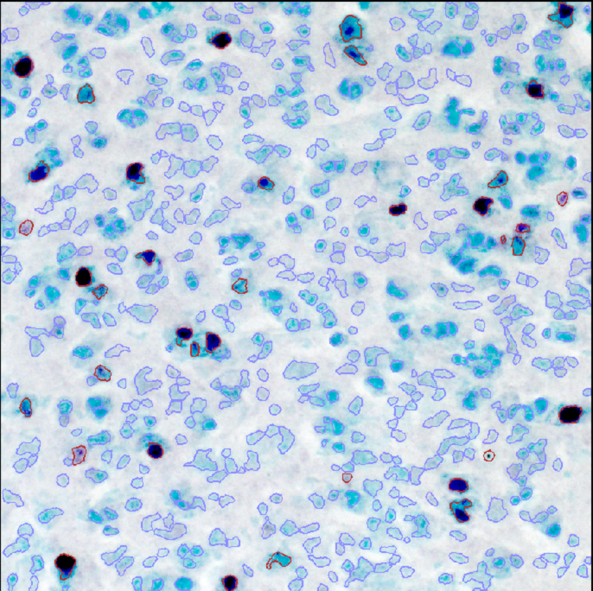
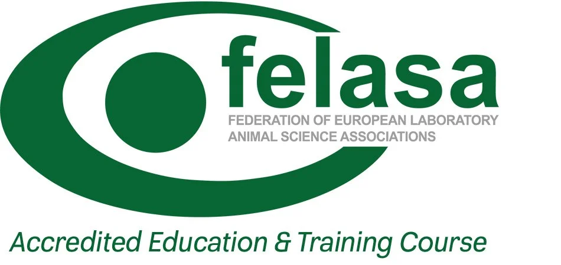

Contact_Information
ober-jo [at] protonmail (dot) com
Click to copy
Project_Log
My Bachelor Thesis

We presented 24 3-day old domestic chicks with either a familiar or unfamiliar scented object and analysed their behavioural and neural response.
Dementia Classification Assignment
As part of a Data Science course, we had to present a final project on a Kaggle dataset of our choosing. Using a Multi-Layer Perceptron, a deep learning algorithm, I successfully classified patients as demented or Non-demented, depending on variables such as cognitive ability, age or education.
FELASA Certificate

As part of my studies, I performed a certified lab-course that taught me to ethically handle laboratory mice (Functions A and D). Additionally, during my thesis project, I worked extensively with domestic chicks.